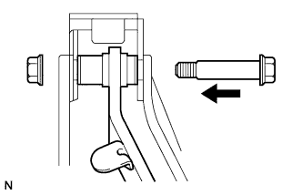
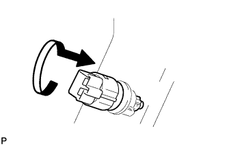

Brake Pedal Support Assembly Reassembly |
| 1. Install Brake Pedal Pad |
Install the brake pedal pad.
| 2. Install Brake Pedal Bush |
Apply MP grease No.2 to the sides and inner surfaces of the 2 new brake pedal bushes.
Install the 2 brake pedal bushes to the brake pedal.
| 3. Install Brake Pedal Sub-assembly |
 |
Install the brake pedal to the brake pedal support with the bolt and nut.
| 4. Install Stop Light Switch Mounting Adjuster |
Install the adjuster to the brake pedal support.
| 5. Temporarily Tighten Stop Light Switch Assembly |
 |
Turn the stop light switch assembly clockwise to temporarily install it to the brake pedal support.